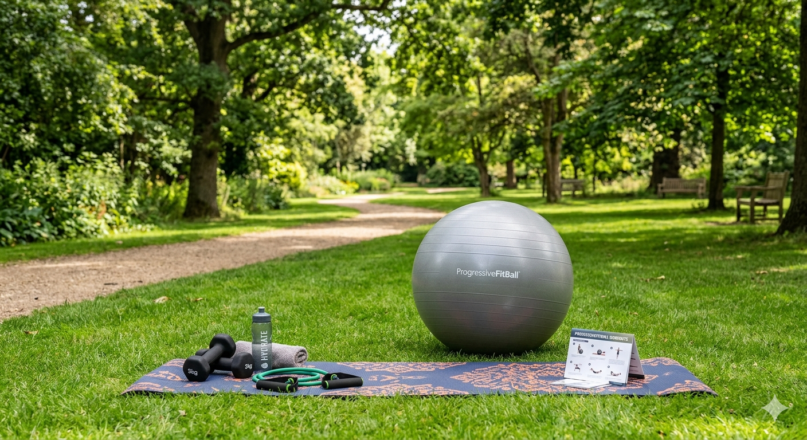

O Progressivefitball (PFB) é um método de exercício físico que pode ser utilizado na reabilitação e no treinamento físico, ou até mesmo, como forma de expressão através do movimento e diversão.
Desenvolvido pelo Fisioterapeuta Rafael Rabelo explora a FITBALL como um equipamento que
oferece infinitas possibilidades de movimentos,
buscando desenvolver as capacidades físicas
do praticante: força, resistência, equilíbrio, flexibilidade, agilidade, coordenação motora
e velocidade.
A prática do PFB no parque reúne todos os benefícios do método aliados ao prazer e bem estar da prática de atividades físicas ao ar livre!